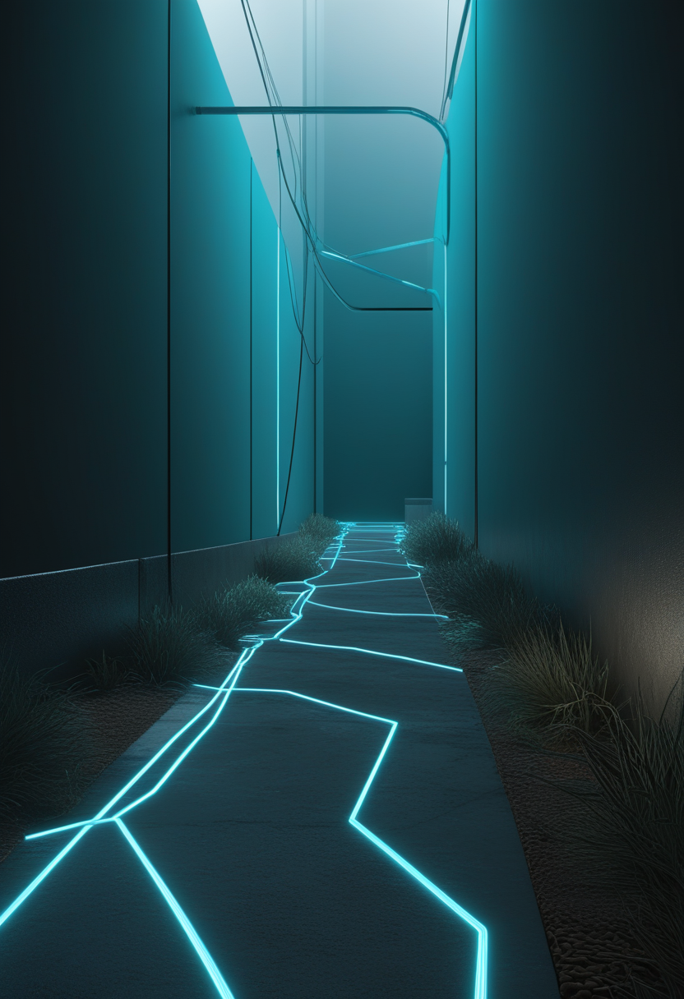
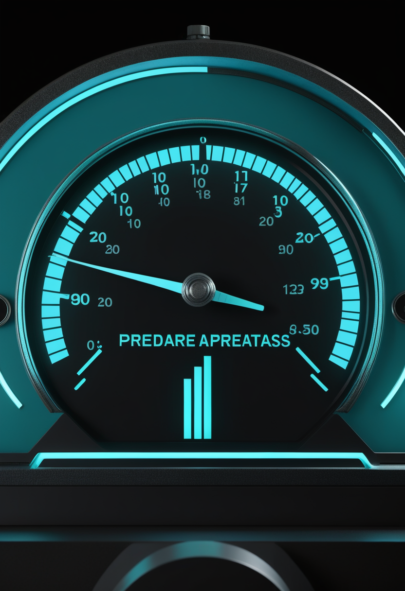
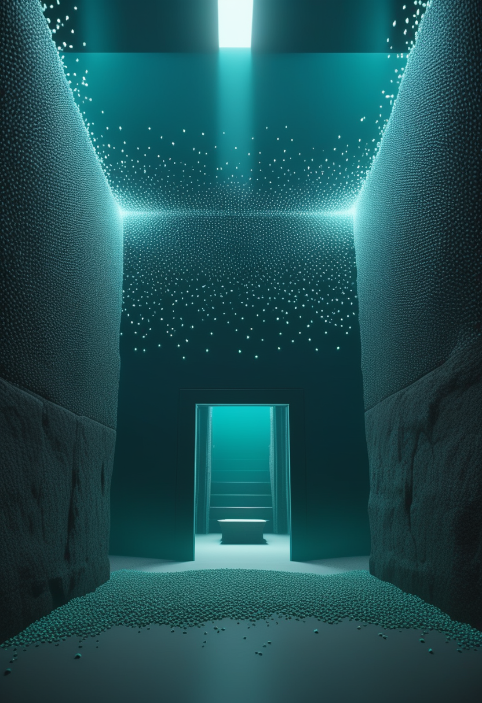

DRCのエボラは記録に残るどの流行よりも速く広がり、確定1万1千人を超えた。隣国の南スーダンは一件の確定例も出ていない段階から備えを固め、BCIは脳卒中への対象拡大と大型資金調達という、次の段階に進んでいる。
11/18号の続報 — 米CDCによると、コンゴ民主共和国(DRC)のエボラ流行は11/15時点で確定11,432例・確定死者5,593人となった(11/18号で報じたECDCの11/14時点集計は11,376例・5,568人)。ロイター(11/17)は、今回の流行が記録に残るどの流行よりも速く広がり、すでに2018〜20年の流行を大きく上回っていると伝えている。WHOのテドロス事務局長は症例が3か月で2倍以上になったと述べた(国連ニュース、11/17)。原因のブンディブギョ型には承認されたワクチンも治療薬もなく、武装勢力の襲撃などで1,000人を超える接触者が追跡できなくなっている。一方で隣国の南スーダンは、一件の確定例も出ていない段階から準備を進めており、記録的な速さの拡大と、先回りした備えが同時に進む構図が見えてきた。
FDAは11/6、SMAの遺伝子治療薬ゾルゲンスマ(オナセムノゲン・アベパルボベク)について、市販後に報告された悪性腫瘍の中に、ベクターのDNAがGLI1遺伝子の近くや内部に組み込まれた『insertional oncogenesis(挿入変異原性)』が確認された例があると発表した。ノバルティスは2019年の承認以来、治療を受けた患者で計9件の腫瘍報告があったと説明している。同じベクターと構造を使うItvismaについては、これまでに腫瘍の報告はないという。FDAは『両製品の承認用途における利益は、現時点で確認されているリスクを上回っている』としつつ、腫瘍発生のリスクについて調査を続け、規制上の対応が必要かどうかを評価するとしている。
Scholar Rockは11/10の第3四半期決算説明で、ISEMBYLDの処方を受けた患者の98%が保険手続きを支える患者支援プログラムに登録し、対象となる主要140施設のうち3分の1以上が10月までに最初の患者を登録したと説明した。7〜9月期の売上は0.6百万ドルで、10月までに登録した患者の多くは2027年に入ってから初回投与を受ける見込みだという。11/16のUBS、11/17のJefferiesの投資家向けカンファレンスでも、経営陣は初期需要が強いと述べた。日本では優先審査の対象として受理されている。
遺伝子治療の安全性は、FDA自身が『利益はリスクを上回る』と判断しつつ調査を続ける段階に入った。一方で承認済みの新薬は、患者への浸透という次の課題を着実に進めている。

Tesla North(11/10)によると、NeuralinkはClinicalTrials.govに新しい試験『PRIME2』を登録した。最大10人の成人を米国内の最大5施設で募集し、従来の脊髄損傷・ALSに加え、発症から12か月以上たち元の利き腕に麻痺が残る慢性の虚血性脳卒中の人を対象に加える。目的は安全性と初期の有効性の確認で、約2年間の追跡が見込まれている。この報道は単独の二次報道で、登録番号(NCT番号)は確認できておらず、ClinicalTrials.govの原簿での裏付けが必要。
上海発のBCIスタートアップNeuroXess(2021年設立)は10/28、シリーズBで約7億元(報道により換算9,800万〜1億500万ドル)を調達したと発表した。資金は完全植込み型・ワイヤレスの脳インプラントシステムの治験、規制対応、量産体制の整備に使われる。同社はこのシステムが正式な治験(registration trial)の段階に入ったとしており、2年以内に医療市場へ本格投入することを目指している。中国ではBCI分野への投資が続いており、上海を拠点とするBCI企業は120社を超えるとされる。
BCIは『病院の外で毎日使えるか』という臨床の問いと、『量産にこぎつけられるか』という産業の問いが同時に進んでいる。脳卒中への対象拡大と大型資金調達は、どちらもその次の段階を見ている。
米CDCの集計では、DRCの累計は11/15時点で確定11,432例・確定死者5,593人。ロイター(11/17)は、援助不足・治安悪化・連携の弱さが封じ込めを遅らせていると分析し、記録に残るどの流行よりも速く広がっていると伝えている。WHO事務局長は11/11の加盟国向け説明で、約3,000人が回復し一部地域では感染が鈍化する兆しもある一方、民間人66人が殺害された襲撃などで1,000人超の接触者を見失ったと述べた。国連ニュース(11/17)では、症例が3か月で2倍を超え、8州67保健区域に広がっていると伝えている。詳しくは本号の今日の一本を参照。
ECDCのまとめによると、ワシントン州ヤキマ郡は11/1、H5N1に感染した2例目の患者が死亡し、3例目も確定したと発表した。1例目は10/15に報告された軽症例で、亡くなった患者には基礎疾患があった。米CDCの11/6の更新では、直近の2例はいずれも商業酪農場の作業者である。Healio(11/2)は、これが米国で今年初めての鳥インフルによる死亡だと報じている。

WHOアフリカ地域事務局は11/12、南スーダンで確定例が一件も出ていない段階からエボラ(ブンディブギョ型)への備えを強化していると発表した。保健省と共同で策定した国家準備・対応計画のもと、10月末時点の準備度は11分野の平均で72.5%。DRC・ウガンダと国境を接するため輸入リスクは高いとされ、ジュバ・ニムレ・イェイ・ヤンビオに感染症隔離ユニットを設置済み。ECHOやFCDOなどの支援機関も協力している。
エボラは記録上最速のペースで広がり続け、隣接する南スーダンは一件の確定例も出ていない段階から備えを固めている。足もとではH5N1が酪農場という日常の現場でも命を奪っている。
NEJM AIは11/16、日常の検査で撮る胸部X線写真に深層学習を使い、将来の骨粗しょう症による骨折のリスクが高い人を見つける原著論文を掲載した。追加の検査なしで骨の弱い人を早く見つけられる可能性がある(性能の数値などの詳細は要確認)。
サミュエル・イー氏らの研究チームが11/9、Astrophysical Journal Lettersに『TOI-2535b』という木星サイズの太陽系外惑星をめぐる論文を発表した。NASAの系外惑星探査衛星TESSが2019年4月〜2026年3月に観測した画像では恒星の手前を通る『トランジット』が見えていたが、2026年初めのデータでは見えなくなった。研究チームは、同じ星系にある別の惑星の重力がTOI-2535bの軌道を傾けていることが原因と結論づけた。軌道の傾き方の変化は年あたり約0.16で、単独の恒星を回る系外惑星としてはこれまでで最も速い変化という。惑星自体が消えたわけではないが、トランジットが観測できなくなった初めての確認例とされている。
CERNのLHCb実験チームは11/3のセミナーで、B⁰(Bd)中間子がミュー粒子の対に崩壊するという、10億分の1という極めて稀な現象の証拠を発表した。1984年から続いてきた探索で、単一の実験のデータだけでこの崩壊の証拠を示したのは初めてという。これまでに見つかっていた関連現象Bs→μ⁺μ⁻に比べ、今回のBd→μ⁺μ⁻は理論上さらに30倍ほど稀だとされる。測定された崩壊の起こりやすさは標準模型の予測と一致し、新しい物理の証拠には至っていない(発見と呼ぶには統計的な確からしさがまだ足りず、査読も済んでいない)。
骨の弱さは胸部X線という日常の検査から見えるようになり、見えていた惑星はトランジットが消えるという形で新しい姿を見せた。CERNでは42年続いた探索が、理論を裏付ける稀な崩壊の証拠にたどり着いた。
ポーランド・スーダン合同の発掘隊が、旧ドンゴラの『イエスの大聖堂』で、高さ11mの階段を掘り進め、これまで埋もれていたオリジナルの床を今季初めて露出させた。大聖堂は推定で幅47m・長さ57mとされ、ホワイトハウスより大きいとも紹介される規模で、ドンゴラ司教座があった最も壮大な建物のひとつと考えられている。隣接する建物の2階でも別の小さな教会が見つかり、壁は高さ約1mしか残っていないものの、彩色装飾の痕跡が瓦礫の中に残っていた。
フランスの発掘機関INRAPが、アルザス地方オルブール=ヴィールの遺跡で、紀元450〜500年ごろの墓地を発掘した。成人11人・子ども3人の人骨に加え、馬具をつけた馬2頭も一緒に埋葬されていた。男性の墓からは剣・盾・投げ槍に加え、金と柘榴石で装飾された短剣が見つかり、ゲルマン系の首長やローマ軍に仕えた『フォエデラティ(同盟部族)』の兵士と結びつく副葬品とされる。治癒の跡がない刺し傷が2人の男性に残り、急な暴力で命を落としたことをうかがわせる。女性の墓には銀製の鳥形ブローチやガラス玉の首飾り、骨製の櫂が収められていた。

国際研究チームが、南シベリア・トゥバ共和国のトゥンヌグ1号遺跡(紀元前8世紀初め、約2,800年前)の大型墓から、1,000〜1,400個ほどの大麻の種子を見つけ、学術誌Scienceに発表した。中央の埋葬室にいた複数の人物の毛髪からはTHCやCBNに一致する化学的な痕跡も検出された。種子は意図的に置かれたとみられ、研究チームは、人身供犠を伴っていた可能性のある埋葬にまつわる緊張を和らげる役割を大麻が担っていたのではないかと推測している。吸煙と摂取のどちらだったかは、今回の分析だけでは特定できていない。
ヌビアでは埋もれていた大聖堂の床が千年ぶりに姿を見せ、フランスではローマ崩壊期の首長が軍馬とともに眠っていた。シベリアの王墓では、埋葬の緊張を和らげたかもしれない大麻の種が2,800年の時を超えて見つかった。
今号の軸は『記録の更新』と『先回りの備え』だった。エボラは記録上最速のペースで広がり続け、南スーダンは一件の確定例も出ていない段階から備えを固めている。FDAは遺伝子治療の利益がリスクを上回ると判断しつつ調査を続け、BCIは脳卒中への対象拡大と大型資金調達という次の段階に進んだ。骨の弱さは胸部X線から見えるようになり、42年続いたCERNの探索は稀な崩壊の証拠にたどり着いた。ヌビアの大聖堂の床、フランスの首長と軍馬、シベリアの大麻の種は、それぞれ違う時代の人々の営みを静かに語っている。
おやすみなさい、また明日。